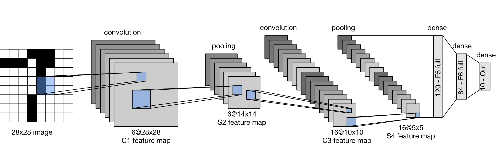
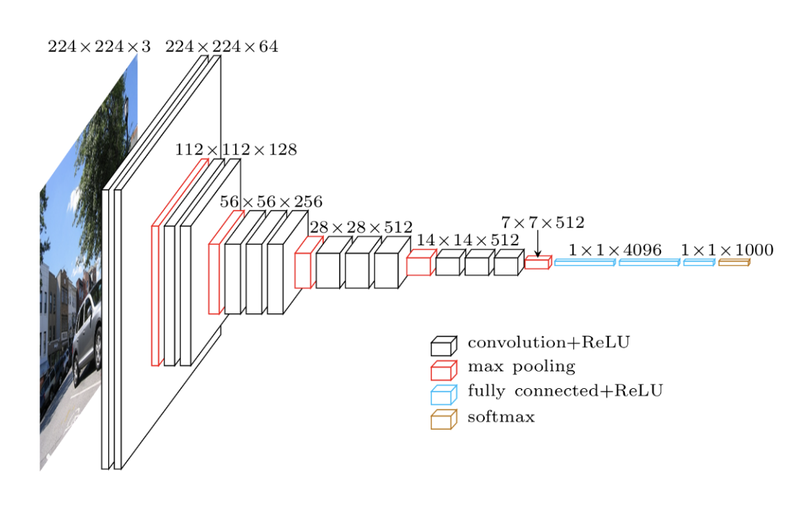
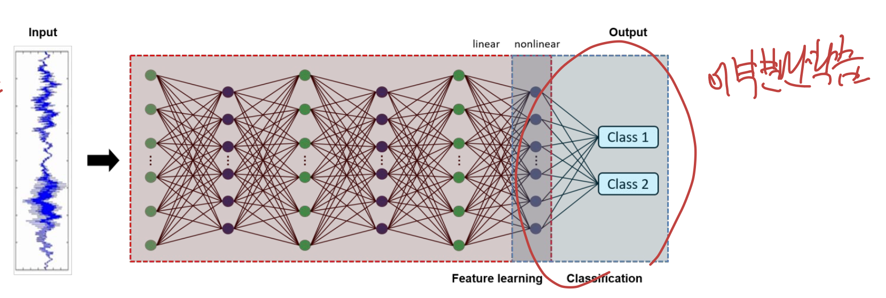

<!DOCTYPE html>
<html lang="ko">
<head>
  <meta charset="utf-8">
  <meta name="viewport" content="width=device-width, initial-scale=1">
  <title>Pre-trained Model &amp; Transfer Learning | Sehyeog Kim</title>
  <link rel="stylesheet" href="../../../assets/css/style.css">
</head>
<body>
  <!-- Mobile header -->
  <header class="mobile-header">
    <span class="site-title">Sehyeog Kim</span>
    <button class="menu-toggle" aria-label="Menu">&#9776;</button>
  </header>
  <div class="sidebar-overlay"></div>

  <div class="site-wrapper">
    <!-- Sidebar -->
    <aside class="sidebar">
      <div class="sidebar-bg">
        
      </div>
      <div class="sidebar-profile">
        
        <h1 class="profile-name">Sehyeog Kim</h1>
        <p class="profile-bio">AI &amp; Computational Engineering<br>Knowledge Base</p>
        <div class="profile-links">
          <a href="https://github.com/Sehyeogkim" target="_blank" rel="noopener">
            <svg viewBox="0 0 16 16" width="16" height="16" fill="currentColor"><path d="M8 0C3.58 0 0 3.58 0 8c0 3.54 2.29 6.53 5.47 7.59.4.07.55-.17.55-.38 0-.19-.01-.82-.01-1.49-2.01.37-2.53-.49-2.69-.94-.09-.23-.48-.94-.82-1.13-.28-.15-.68-.52-.01-.53.63-.01 1.08.58 1.23.82.72 1.21 1.87.87 2.33.66.07-.52.28-.87.51-1.07-1.78-.2-3.64-.89-3.64-3.95 0-.87.31-1.59.82-2.15-.08-.2-.36-1.02.08-2.12 0 0 .67-.21 2.2.82.64-.18 1.32-.27 2-.27.68 0 1.36.09 2 .27 1.53-1.04 2.2-.82 2.2-.82.44 1.1.16 1.92.08 2.12.51.56.82 1.27.82 2.15 0 3.07-1.87 3.75-3.65 3.95.29.25.54.73.54 1.48 0 1.07-.01 1.93-.01 2.2 0 .21.15.46.55.38A8.013 8.013 0 0016 8c0-4.42-3.58-8-8-8z"/></svg> GitHub
          </a>
        </div>
      </div>
      <nav class="sidebar-nav">
        <a href="/" class="nav-item nav-home">Home</a>
        <span class="nav-label">Categories</span>
        <a href="/blog/agentic-ai/" class="nav-item">Agentic_AI<span class="nav-post-count">8</span></a>
        <a href="/blog/blood-flow-and-metabolism/" class="nav-item">Blood-Flow-and-Metabolism<span class="nav-post-count">12</span></a>
        <a href="/blog/cardiovascular-diseases/" class="nav-item">CardioVascular-Diseases<span class="nav-post-count">8</span></a>
        <a href="/blog/computational-linear-algebra/" class="nav-item">Computational-Linear-Algebra<span class="nav-post-count">15</span></a>
        <a href="/blog/continuum-mechanics/" class="nav-item">Continuum-Mechanics<span class="nav-post-count">9</span></a>
        <a href="/blog/deep-learning/" class="nav-item active">Deep-learning<span class="nav-post-count">14</span></a>
        <a href="/blog/finite-element-method/" class="nav-item">Finite-Element-Method<span class="nav-post-count">1</span></a>
        <a href="/blog/fluid-mechanics/" class="nav-item">Fluid-Mechanics<span class="nav-post-count">18</span></a>
        <a href="/blog/gas-dynamics/" class="nav-item">Gas-Dynamics<span class="nav-post-count">24</span></a>
        <a href="/blog/heat-transfer/" class="nav-item">Heat-transfer<span class="nav-post-count">8</span></a>
        <a href="/blog/math/" class="nav-item">math<span class="nav-post-count">0</span></a>
        <a href="/blog/numerical-heat-transfer-and-fluid-flow/" class="nav-item">Numerical-Heat-transfer-and-Fluid-flow<span class="nav-post-count">14</span></a>
        <a href="/blog/solid-mechanics/" class="nav-item">Solid-Mechanics<span class="nav-post-count">25</span></a>
        <a href="/blog/thermodynamics/" class="nav-item">Thermodynamics<span class="nav-post-count">14</span></a>
        <a href="/blog/viscous-flow/" class="nav-item">Viscous-Flow<span class="nav-post-count">28</span></a>
        <a href="/blog/과학/" class="nav-item">과학<span class="nav-post-count">26</span></a>
        <a href="/blog/취미/" class="nav-item">취미<span class="nav-post-count">2</span></a>
      </nav>
    </aside>

    <!-- Main content -->
    <main class="main-content">
      <div class="breadcrumb">  <a href="/">Home</a><span class="sep">/</span>  <a href="/blog/deep-learning/">Deep-learning</a><span class="sep">/</span>  <span>Pre-trained Model &amp; Transfer Learning</span></div>
<a href="/blog/deep-learning/" class="back-link">&larr; Back to Deep-learning</a>
<div class="page-header"><h1>Pre-trained Model &amp; Transfer Learning</h1></div>
<div class="post-meta"><span class="meta-item"><span class="meta-label">Date:</span> 2024-12-11</span><span class="meta-item"><span class="meta-label">Category:</span> Deep-learning</span><span class="meta-item"><span class="meta-label">Source:</span> <a href="https://jeffdissel.tistory.com/138" target="_blank" rel="noopener">link</a></span></div>
<article class="post-content"><p>[Pre-trained Model]<br />
굉장히 거대한,<br />
model을 새롭게 학습시키고,<br />
구조화 시키는데 수많은 시간이 들어간다.<br />
따라서, 사용 목적이 다르더라도<br />
기존의 학습된 거대한 모델(pre trained model)을<br />
가져와서 사용하는 방식이 바로<br />
Transfer Learning 이다.<br />
그렇다면,<br />
기존의 학습된 거대한 모델에는<br />
어떠한 것들이 있는지 살펴보자.<br />
1. LeNET<br />
<br />
지금까지 쓰이는 CNN 모델의 구조의<br />
basic component를 알려주는<br />
전통적인 모델이다.<br />
보이는 것처럼 기본적으로,<br />
convolutional filter수를 늘리고,<br />
feature map size를 줄인후,<br />
마지막에 flatten작업으로<br />
ANN구조로 원하는 output을 도출하도록 한다.<br />
2. Alex Net<br />
<br />
lenet에 더하여, dropout, data augmentation등<br />
추가적인 방법들을 더한 모델이다.<br />
3. VGG<br />
<br />
위 모델들보다 훨씬 깊은 구조로,<br />
모델이 structure되어 있음을 알 수 있다.<br />
-&gt; 더더욱 깊은 feature을 추출하기 위함.<br />
'very deep model'<br />
4. Google net/ Inception<br />
<br />
아주 신기하게,<br />
kernel size를 다양하게 병렬적으로 filter 작업을 수행한다.<br />
이를 통해 다양한 사이즈에서의 feature들을 학습하고,<br />
마지막에 filter concatenation에서<br />
전체 특징을 합쳐주는 작업을 진행한다.<br />
(다른 모델들 보다, feautre 추출에 힘을 씀)<br />
feature의 추출이 중요한<br />
image segmentation 분야에서<br />
많이 쓰인다.<br />
5. Res-Net<br />
<br />
x: input<br />
F(x): convBlock 결과<br />
H(x) : output<br />
= F(x) + x<br />
굉장히 많이 쓰이는 모델 구조이다.<br />
위 사진은 R-Net의 한 convBlock인데,<br />
한 블락에서 Input을 마지막에 다시 가져와서 더해준다.<br />
핵심 적인 것은 결국,<br />
학습 과정에서 weight는 업데이트 되고,<br />
F(x)를 통해서 결국 계속해서 학습된다는 것이다.<br />
재밌는 사실은<br />
ouput - input = F(x)<br />
이므로 residual = F(X)<br />
따라서, residual 을 학습한다라고 하여<br />
Res-net<br />
6. Dense net<br />
<br />
이전의 Res-net은<br />
한 block의 input을 같은 block의 ouput에 더해주었다면,<br />
Dense Net은<br />
다른 블락에게도 전달해주는 구조이다.<br />
굉장히 복잡하지만,<br />
이전 정보들을 모두 함축할 . 수 있다.<br />
CNN에서 이전정보라 함은<br />
Spatial information이므로<br />
Spatial information이 중요한<br />
작업에 쓰인다.<br />
7. U-Net<br />
<br />
Convolutional Auto Encoder(CAE)<br />
의 구조를 띠는 U-Net은<br />
실제로 medical image 분류에 많이 쓰이는 모델이다.<br />
다음 포스터에서 CAE에 대해서 자세하게 다루겠지만,<br />
autoencoder처럼<br />
Encoder(사진축소) : 사진의 feautre를 추출<br />
Decoder(사진 복원): Feature로 부터 사진 제작.<br />
핵심은 Encoder부분에서와 Decoder에서의 부분을<br />
연결시켜 주어. 이전 정보를 최대한 복원하는 방식을 사용한다.<br />
(Skip connection)<br />
지금까지 pre-trained model들에 대해서 알아보았고,<br />
이것을 실제로 사용하는 방법은 매우 간단하다.<br />
그냥 tensorflow로 import하면 된다.<br />
<br />
<br />
<br />
<br />
pretrained에서 가져온 model<br />
[Transfer Learing]<br />
위의 학습된 모델을 가지고,<br />
결국 우리가 원하는 task를 위한 output을 위해서<br />
뒷부분만 수정해주고 학습시키면 된다.<br />
<br />
즉, 좌측의 source data로 이미 학습된 모델이 존재할때,<br />
우리가 원하는 target data, 로 원하는 target model은<br />
중간 later-weight을 모두 복사하고,<br />
마지막의 output layer만 수정하고 학습시키면 된다.<br />
<br />
이게 가능한 이유는,<br />
결국에 중간 layer들은<br />
특징을 추출하는 층이다.<br />
사진의 특징이라하면,<br />
edge, boundary, 등등<br />
공통적인 범위안에 존재한다.<br />
따라서, 최종 task가 달라지더라도,<br />
결국 추출해야하는 특징은 비슷하거나 동일하다는 것이다.</p></article>
      <footer class="site-footer">
        <p>&copy; 2026 Sehyeog Kim. Built with gitfolio-inspired theme.</p>
      </footer>
    </main>
  </div>

  <script src="../../../assets/js/main.js"></script>
</body>
</html>